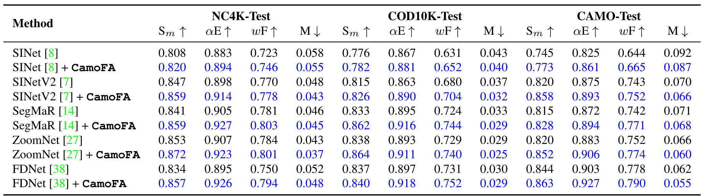
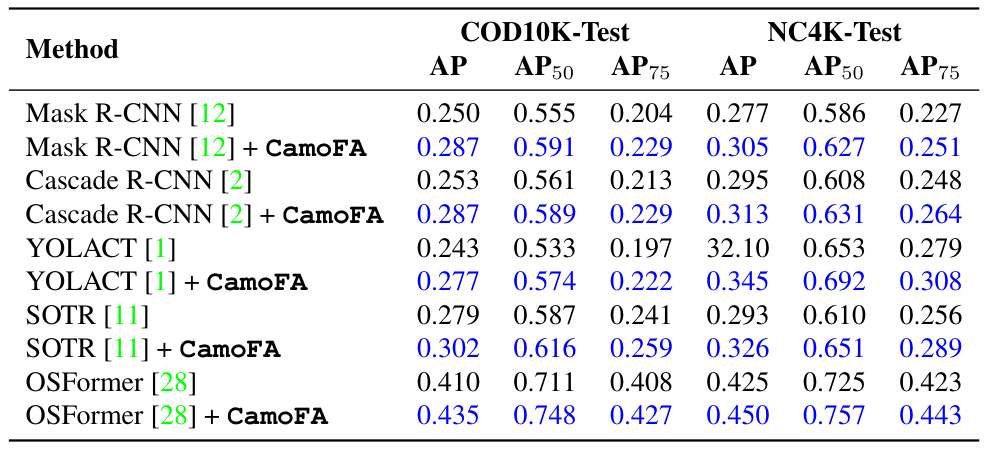
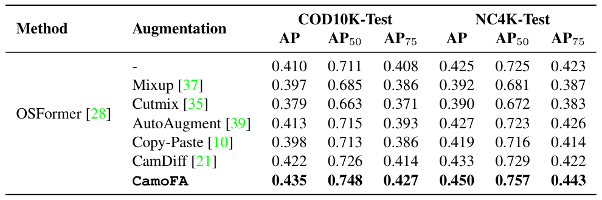
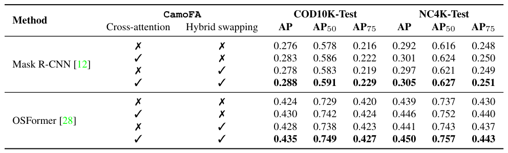

Quantitative Results
Table 1. The effectiveness of our CamoFA in improving camouflaged object detection models on three benchmarks: CAMO [19], COD10K [8], and NC4K [22]. Our CamoFA drastically increases the performance of cutting-edge methods of COD, improved results are highlighted in blue color.

Across NC4K-Test, COD10K-Test, and CAMO-Test, adding CamoFA improves all four reported metrics for each of the five detectors. For example, SINetV2 on NC4K-Test rises from 0.847 to 0.859 in Sm while M falls from 0.048 to 0.043.
Table 2. Effectiveness of our CamoFA in improving CIS model OSFormer [28] and generic instance segmenters on two benchmarks: COD10K [8] and NC4K [22]. Our CamoFA significantly boosts the performance of state-of-the-art methods and improved results are highlighted in blue color.

Adding CamoFA improves AP, AP50, and AP75 for the evaluated CIS models on COD10K-Test and NC4K-Test. For Mask R-CNN, COD10K-Test AP rises from 0.276 to 0.288; for OSFormer, it rises from 0.424 to 0.435.
Table 3. Comparisons between our CamoFA and existing generic augmentation methods in the camouflaged object detection task. Cutting-edge augmentations show ineffectiveness when applying to COD while our CamoFA boosts the performance of SINetV2 [7] significantly.

On SINetV2, CamoFA reaches 0.435 AP on COD10K-Test and 0.450 on NC4K-Test, exceeding the listed augmentation methods on both datasets. The caption notes that common augmentations can be ineffective for COD.
Table 4. Comparisons between our CamoFA and existing generic augmentation methods in CIS task. State-of-the-art generic augmentations downgrade the effectiveness of OSFormer [28] while our CamoFA drastically improves CIS models' performance.
![Table 4: Comparisons between our CamoFA and existing generic augmentation methods in CIS task. State-of-the-art generic augmentations downgrade the effectiveness of OSFormer [28] while our CamoFA drastically improves CIS models' performance.](./static/images/table4.png)
For OSFormer, CamoFA reaches 0.435 AP on COD10K-Test and 0.450 on NC4K-Test, higher than the other listed augmentation methods. The paper reports that generic augmentations can reduce OSFormer’s performance.
Table 5. Our ablation study in the task of camouflaged object detection. CamoFA with a cross-attention mechanism and adaptive hybrid swapping achieves the best performance when plugged into SINetV2 [7] and ZoomNet [27].
![Table 5: Our ablation study in the task of camouflaged object detection. CamoFA with a cross-attention mechanism and adaptive hybrid swapping achieves the best performance when plugged into SINetV2 [7] and ZoomNet [27].](./static/images/table5.png)
For both SINetV2 and ZoomNet, the setting with cross-attention and hybrid swapping gives the strongest reported results overall. SINetV2 reaches 0.826 Sm on COD10K-Test and ZoomNet reaches 0.864; the table also shows gains from adding either component alone.
Table 6. Our ablation study in the task of camouflaged instance segmentation. CamoFA with cross-attention mechanism and adaptive hybrid swapping achieves the best performance when plugged into OSFormer [28] and Mask R-CNN [12].

For Mask R-CNN and OSFormer, enabling both cross-attention and hybrid swapping yields the strongest reported AP values across COD10K-Test and NC4K-Test. Mask R-CNN reaches 0.288 and 0.305 AP, while OSFormer reaches 0.435 and 0.450 AP on those datasets.